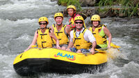
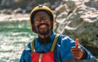

Our purpose is to provide thrilling river adventures while ensuring safety and fun for all.
Our mission: Deliver unforgettable whitewater experiences guided by experts.
Our creed: Adventure, safety, and excitement go hand in hand.
Our motto: "Ride the Rapids, Feel the Rush!"


Whitewater Rafting
History
Founded in 2024, Whitewater Rafting began as a small local rafting company with a passion for providing exciting and safe river experiences. Over the years, we have expanded our services to include trips on some of the most renowned rivers, offering a variety of adventures suitable for beginners and experienced rafters alike. Our team of expert guides ensures every excursion is both thrilling and secure, while our carefully maintained equipment guarantees a high-quality experience. We pride ourselves on creating unforgettable memories, fostering teamwork, and introducing our guests to the beauty and excitement of whitewater rafting.